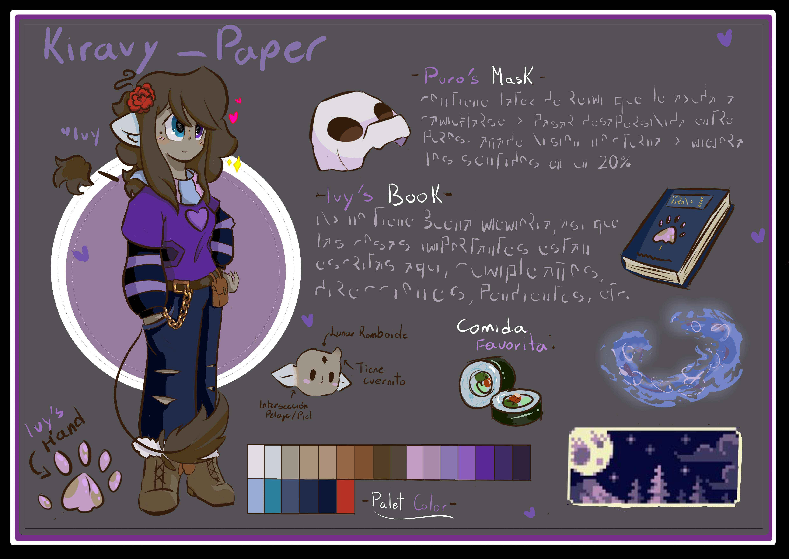
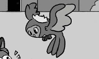
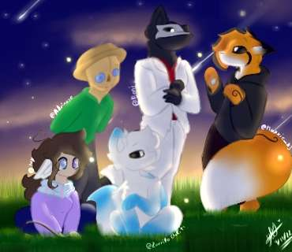
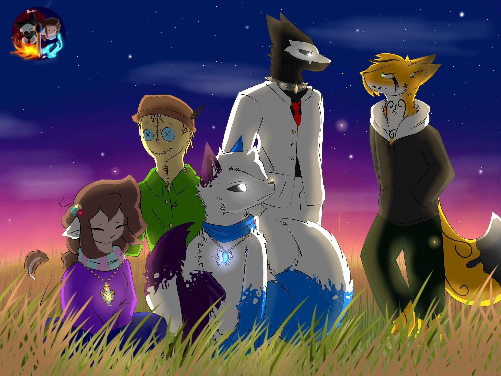

PERSONAJES
Personajes originales y versiones mejoradas de diseños existentes.
Originales
La Lechuza y Birdy, dos de mis más importantes creaciones que han tenido cameos en diferentes publicaciones desde 2014


Mejorados
Un pequeño recuento de pequeñas mejoras que terminan por cambiar al personaje

